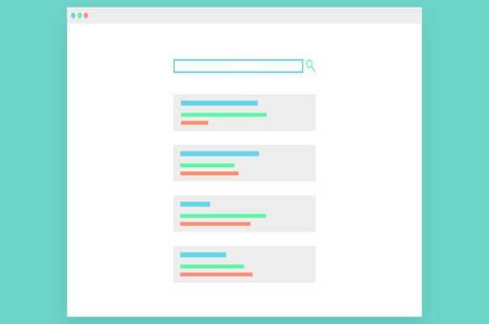

Herramientas esenciales para la gestión del conocimiento
La gestión del conocimiento se define como el proceso de creación, intercambio, utilización y gestión de la información de una organización. La gestión del conocimiento se abrevia comúnmente como KM y KM tools es la abreviatura utilizada para las herramientas de gestión del conocimiento.
Las mejores herramientas de gestión del conocimiento pueden proporcionar a las empresas beneficios significativos. Un beneficio notable que las herramientas KM proporcionan a las empresas es la capacidad de organizar y categorizar bases de conocimiento que son increíblemente complejas.
A medida que la tecnología se desarrolla rápidamente, las herramientas de KM son cada vez más avanzadas. Sin embargo, independientemente de lo avanzados tecnológicamente que sean, las herramientas de gestión del conocimiento deben asegurarse de abordar las necesidades fundamentales de la gestión de los conocimientos.
7 herramientas de gestión del conocimiento para que las empresas inviertan e implementen incluyen:
Repositorio de contenido:
Un repositorio de contenido es una herramienta de administración que permite a los usuarios no solo administrar el conocimiento sino también compartirlo. Muchas empresas utilizaban anteriormente el software de gestión de documentos como su principal herramienta de repositorio de KM. empresa puede querer administrar contenido de redes sociales o sitios web.
Un ejemplo de una herramienta de gestión del conocimiento comúnmente utilizada para propósitos de repositorio son los sistemas de gestión de contenido basados en la nube.
Búsqueda de texto:
La capacidad de utilizar las capacidades de búsqueda de texto puede simplificar en gran medida el proceso de gestión del conocimiento. Las capacidades de búsqueda de texto proporcionan a los empleados un portal de autoservicio fácil de usar para buscar conocimientos
Entre los ejemplos de diferentes fuentes de datos se incluyen los sistemas de software de gestión de contenido empresarial y gestión de relaciones con los clientes.
Las herramientas de comunicación:
Fundamentales para una amplia gama de operaciones empresariales. Como tal, no es sorprendente que las grandes herramientas de comunicación ayuden con los sistemas de gestión del conocimiento.
Socialización:
Existen herramientas específicas de gestión del conocimiento disponibles que simplifican y agilizan la socialización del conocimiento. Estas características sociales suelen estar disponibles en las principales soluciones de software empresarial.
Las soluciones empresariales principales con funciones sociales integradas pueden abarcan desde la gestión de relaciones con el cliente hasta el software de gestión de contenido empresarial.
Visualización:
Diferentes personas aprenden mejor de diferentes maneras. Mientras que algunos empleados pueden aprender mejor de la información auditiva, otros aprenden mejor visualmente. Las herramientas de visualización permiten la comunicación visual del conocimiento.
Mientras que la mayoría del conocimiento organizacional se comunica a través de representaciones 2D, las representaciones 3D son cada vez más populares. A pesar de que la visualización del conocimiento es una herramienta de KM más reciente, tiene un potencial excepcional.
Toma de decisiones:
Algunas herramientas de KM son especialmente útiles para la toma de decisiones en el lugar de trabajo. Las herramientas de apoyo a la toma de decisiones se utilizan para ayudar a los profesionales empresariales con la toma de decisiones importantes.
Las herramientas de soporte para la toma de decisiones proporcionan la capacidad de buscar a través de una amplia base de conocimientos en tiempo real a través de un portal de autoservicio basado en la nube. Como resultado, las herramientas de apoyo a la toma de decisiones ayudan a los profesionales empresariales a asegurarse de que están tomando las decisiones más informadas posibles.
El acceso al mejor conocimiento posible ayuda con iniciativas de toma de decisiones empresariales que pueden abarcan desde la gestión de proyectos hasta las opciones de servicio al cliente.
Big Data
Big Data es una categoría de herramientas de KM que pueden almacenar, administrar y explorar una base de conocimientos extensa. Para las empresas que poseen bases de conocimiento grandes, las herramientas de big data pueden servir como un recurso inestimable.
Muchas organizaciones utilizan herramientas de gestión de información de big data para localizar el conocimiento dentro de datos estructurados y no estructurados. Un ejemplo de datos no estructurados incluiría conversaciones y un ejemplo de datos estructurados incluiría tablas basadas en datos.
Hay muchas herramientas de software de gestión del conocimiento para que los profesionales de negocios puedan investigar.
Las mejores herramientas de software de gestión del conocimiento incluyen herramientas de comunicación para miembros del equipo y plataformas de autoservicio de búsqueda de texto.
REFERENCIAS BIBLIOGRAFICAS
https://zipreporting.com/es/knowledge-management/knowledge-management-tools.html